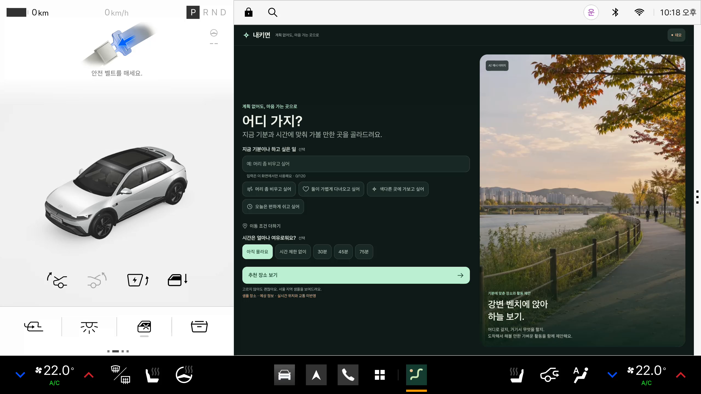
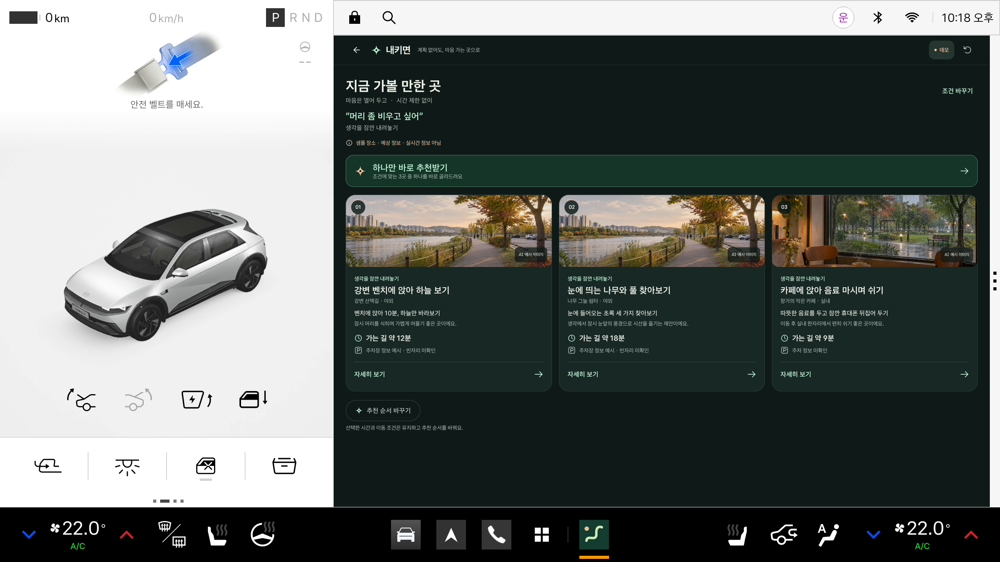
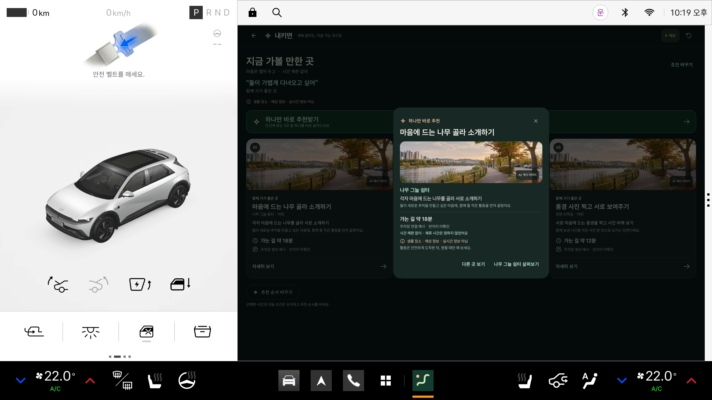
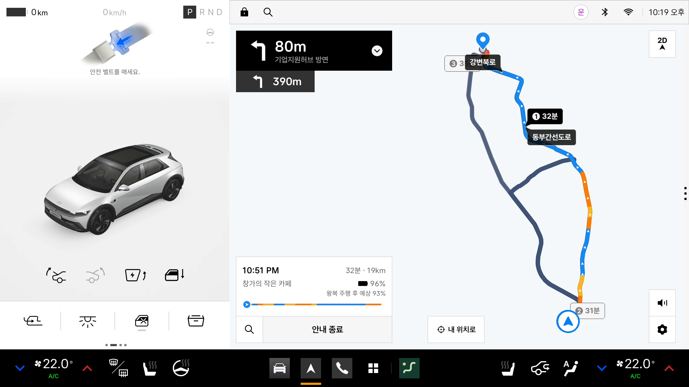

이전 0.1 자동 시험 67개 통과. 0.2의 주행용 화면과 응답 시험은 별도 기록합니다.
PLEOS CONNECT NATIVE DEMO · 0.1.0
내키면
지금 기분과 시간에 맞춰
가볼 만한 곳을 골라드려요.
“머리 좀 비우고 싶어”라는 말에서 구체적인 활동을 찾고, 지금 조건에 맞는 한 곳을 고릅니다. 선택한 목적지는 직접 확인한 뒤 Pleos 내비로 이어집니다.
0.1 Pleos 에뮬레이터 실행 시연
Pleos Connect Emulator 2.1.0에서 실행한 0.1 APK의 대기 구간을 편집했습니다. 장소·시간은 샘플입니다. 0.2의 주행용 화면 변경은 검증 기록에서 별도로 확인합니다.현재 구현과 검증
명시적 확인 뒤 경로 요청. 목적지 일치와 새 경로 상태를 받아 완료 표시.
알려진 주행 상태에서는 한 곳 요약과 목적지 확인, 정차 시 전체 비교. 상태를 알 수 없으면 내비 변경을 막습니다.
화면으로 보기




범위와 남은 검증
추천은 기기 안의 예시 규칙과 고정 장소 데이터입니다. 실시간 위치·혼잡·주차를 조회하지 않습니다. Gleo 스키마·입력·Callback은 구현했지만 실제 음성 호출 승인은 전입니다. 실차 및 App Market 심사도 별도입니다. 사진은 실제 장소를 나타내지 않는 AI 예시입니다.